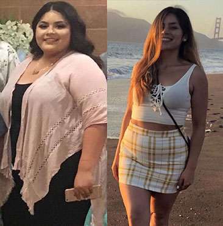

En este artículo te diré cómo perder peso rápidamente en casa. Lo principal es que no se necesitan dietas ni entrenamiento. ¡Todo lo ingenioso es simple!
¿Cómo hacer que los hombres nos miren con amor? ¿Cómo salvar su salud y vivir una vida larga y feliz?
¡Vamos familiaricémonos! Mi nombre es Gabriela Rivera Peláez
Doctor en Ciencias Médicas, profesora, médico de la máxima categoría, gastroenteróloga, hepatóloga, nutricionista, terapeuta
Miembro de la Sociedad Científica de Guatemala, miembro de la Asociación Guatemalteca de Gastroenterólogos, miembro de la Sociedad Europea para el Estudio de las Enfermedades Hepáticas (ISLE) y de la Organización Europea de Especialistas en Colitis Ulcerosa y Enfermedad de Crohn (ECCO), miembro de la editorial juntas y consejos editoriales de varias revistas terapéuticas.
¡Gracias a mí, más de 5 mil personas han perdido peso!
Experiencia laboral: 36 años
¡Morir de sobrepeso!
Los ataques cardíacos, los accidentes cerebrovasculares, la diabetes mellitus, la hipertensión, las venas varicosas, la pancreatitis, los trastornos hormonales y otros en el trabajo del cuerpo femenino causan sobrepeso.
Esto es muy peligroso, pero la mayoría de las mujeres siguen haciendo la vista gorda ante el problema, tratan de convencerse de que todo está bien, aunque no es así.
Según los últimos datos de la Asociación Mundial de la Salud, la mortalidad en el mundo por complicaciones provocadas por la obesidad ha aumentado un 15%, mientras que en nuestro país ha aumentado hasta un 17% o 2,5 millones de mujeres al año. Estas cifras aterradoras no son un reproche, sino un motivo para pensar en tu salud.
Piensa en tu bienestar, en tus seres queridos, a quienes les cuesta mirar los problemas con tu salud. Imagínese la ligereza que experimentan las personas delgadas y sanas: no tienen dificultad para respirar, no les duele el corazón, les es fácil moverse y también es fácil vivir.
Las complicaciones con el peso ocurren gradualmente:
Inicialmente, simplemente no tiene suficiente tiempo para comer bien. Pasa poco tiempo al aire libre, camina poco. Debido al ajetreo y el bullicio, no hay tiempo para ti en absoluto. ¡Esto es familiar para TODAS las mujeres mayores de 30 años!
¿Por qué la dieta y el ejercicio no ayudan?
Una dieta puede ayudar solo si siempre la sigues y no la rompes a lo largo de tu vida, para que el cuerpo pueda llegar a un estado de paz y armonía consigo mismo. De lo contrario, el cuerpo y el estómago en particular, percibe la dieta como un estrés más y sigue fallando. Como regla general, las consecuencias de una dieta son aún más deplorables que su ausencia, por lo tanto, niñas, niñas, madres, no hagan dieta.
Con los deportes y el ejercicio, las cosas son similares: tu sistema neuronal y todo tu cuerpo están bajo estrés, y decides empeorar la situación aún más con el ejercicio. Recuerda, ¡no puedes hacer eso! La actividad física durante el período de estrés y desequilibrio del estómago provoca daño abierto y oculto: ataque cardíaco, fracturas, ruptura de vasos sanguíneos, desprendimiento de las glándulas suprarrenales.
Una de mis pacientes, además del curso de tratamiento prescrito por mí (que no incluía dieta ni ejercicio), decidió "ayudarse" a sí misma a perder aún más peso. Si, aceleró el proceso de bajar de peso con ejercicios y dietas, pero al mismo tiempo se ganó 2 hernias, un brazo roto y bulimia al final, ahora intentan salvarla, pero hasta el momento su estado es sumamente inestable.
¿HAY SALVACIÓN?
El Instituto de Nutrición de Centroamérica y Panamá (INCAP) logró crear un medicamento para bajar de peso altamente efectivo basado en los últimos avances científicos, ¡y además poner esta herramienta al alcance de absolutamente todos!
La herramienta se llama y es una droga para quemar grasa. Gracias a componentes cuidadosamente seleccionados, penetra profundamente en el cuerpo junto con una nutrición normal y afecta selectivamente la estructura misma de los depósitos de grasa, el sistema metabólico del cuerpo se normaliza y los depósitos de grasa desaparecen naturalmente.
– un nuevo programa de pérdida de peso destinado a combatir todos los factores que conducen a un conjunto de sobrepeso. Después del inicio de la ingesta, se activa el mecanismo de descomposición termogénica de los depósitos de grasa, se aceleran los procesos metabólicos, y digestivos, se suprime el hambre excesiva, lo que conduce a una corrección natural y segura del peso corporal en el menor tiempo posible sin cambiar. el estilo de vida habitual.
Especialistas en el campo de la nutrición, cosmetología, endocrinología, microbiología, ginecología, urología participaron en el desarrollo de una fórmula única del complejo, que se llevó a cabo durante 15 años.
El medicamento se presenta en forma de cápsulas, que se deben tomar 2 veces al día con agua.
El contenido de cada cápsula del medicamento tiene como objetivo resolver varios problemas, y su acción durante el curso conduce a la quema activa de células grasas (incluidas las células viscerales escasamente solubles), limpia el cuerpo, aumenta el tono general y mejora la condición de la piel.
1 día de aplicación.
La etapa preparatoria para iniciar el proceso de pérdida de peso segura.
2 días de aplicación.
Excreción de colesterol y exceso de glucosa del cuerpo. Debido al efecto sobre
las papilas gustativas, se reducen los antojos de comida chatarra y se suprimen
los ataques de hambre.
3 días de aplicación.
Activación de la lipólisis de los depósitos grasos. Limpiar el cuerpo de
compuestos lipoides residuales.
4 días de aplicación.
El elemento principal del complejo. Acelerando el metabolismo, previniendo el
proceso de acumulación de nuevas grasas.
5 días de aplicación.
Redistribución adecuada de BJU. Asimilación de proteínas, conversión de grasas
y carbohidratos en energía.
6 días de aplicación.
Normalización del tracto digestivo mediante la eliminación de toxinas del cuerpo.
Efecto positivo sobre el estado de la piel.
7 días de aplicación.
Efecto fortalecedor general dirigido al funcionamiento del sistema inmunológico
y procesos metabólicos.
¡Gracias al rápido metabolismo de las personas que toman , la grasa subcutánea en las áreas problemáticas puede quemarse a un ritmo de hasta 800 gramos por día! Este medicamento es efectivo incluso en los casos en que el exceso de peso es causado por alteraciones hormonales. Si tiende a tener sobrepeso, ¡este medicamento es para usted!
Resultado a los 37 días de ingreso
Investigaciones clinicas
En el estudio participaron más de 5.000 mil mujeres de 25 a 70 años. Cada uno de los sujetos usó el medicamento durante 7 días sin cambiar su dieta. Conclusión de la investigación:
1. Pérdida de masa grasa de 12 a 15 kg.
– al deshacerse de un peso de 15 kg – 95%
– al deshacerse de un peso de 12 kg - 100%.
2. Mejora notable en el metabolismo.
3. Aumento del tono y actividad física.
4. Mejora del hígado y del sistema endocrino.
Diana, lo principal es no abusar de la dosis, ya que la droga es muy fuerte y, en lugar de 10, puedes perder los 20 kg.
Pude perder 31 kg, mi peso era de 94 kg, recuerdo lo difícil que fue para mí
al principio, pero si funciona o no, si es efectivo o no. Es difícil cuando
no tienes apoyo, especialmente cuando tu peso es enorme, pero
quemó todos los kilos, y me retiro pronto, ¡no esperaba tales resultados!

¡Chicas, no escuchen a nadie! Creo que para bajar de peso es lo mejor que he probado, y lo más maravilloso que me ha ayudado a mi edad.
Desafortunadamente, no puedo presumir de un resultado a largo plazo, porque he estado tomando durante solo una semana, pero no lo creerán, ¡pero en los primeros 7 días perdí 3 kg y solo me quedaron 18! ¡Tendré éxito! Deber :)
Alla, significa que no leyó bien la sección de instrucciones del método de aplicación, vuelva a leerla con cuidado, ¡y comience a beber el medicamento siguiendo las instrucciones!
Hola, en 2 meses de tomar perdí 41 kg, el tiempo ya pasó decentemente y el peso es estable. Esta es mi foto:
¡También logré bajar de peso! ¡Buena suerte a todos, cruzo los dedos por ustedes!
Tengo un hueso ancho pero los me han ayudado mucho. Hay una gran diferencia entre lo que fue y lo que es ahora. Nunca esperé que a mi edad pudiera perder casi 40 kg (hasta ahora -37 kg). ¡Me siento genial! ¡Esta solución es perfecta para personas como yo! ¡Definitivamente recomiendo este producto! Aquí están mis resultados:
Antes de empezar a tomar , pesaba 90 kg. En su juventud, siempre fue delgado y, con la edad, su estómago y sus costados aparecieron gradualmente. A los 36 años me di cuenta de que necesitaba ponerme en orden con urgencia. Se dedicó a entrenar durante casi un año, pero no pudo alcanzar su forma normal. Luego agregué a mi dieta y en solo mes y medio me convertí en el que recuerdo de mi juventud. Ahora miro mi figura, y siempre tengo un par de paquetes de en stock.
Vivo en Mixco desde que nací. Debido a mi trabajo soy propensa al sobrepeso y alguna vez, hace tanto tiempo que me parece que ya no es así, pesaba casi 140 kg. Pedí para bajar de peso y ahora peso unos inimaginables 71 kg. El resultado: ¡menos 69 kg en 3,5 meses! ¡El peso está aguantando! Estoy orgulloso de mostrarles fotos, el resultado de mi lucha contra el exceso de peso. Ni siquiera creía que pudiera cambiar tanto a mi edad, ¡pero resultó que perdía peso realmente a cualquier edad! ¡Gracias!
Después del parto, si se aumenta de peso, entonces es urgente conducir una caminadora durante varias horas, pero escuché que esto es muy dañino para las articulaciones, porque esto es esencialmente saltar con exceso de peso, las articulaciones simplemente no lo soportan. O puede empezar a tomar . Es extraño que la gente común se esté enterando ahora. Tengo tales logros en la foto de abajo!. Sigo con el mismo espíritu ;)
¿Has probado a dejar de comer? Bueno, cuando los niños son comprensivos, dan y comes. Bueno, ahora que ya son tías adultas, ¿es realmente imposible controlarse y simplemente no comer?
Irene, si no lo sabías, entonces hay personas que tienen una tendencia genética a tener sobrepeso, y ninguna dieta y medicamentos pueden salvarte de esto. Si no eres propenso al sobrepeso, estás de suerte, pero te aseguro que no todo el mundo tiene tanta suerte como tú.
Gabriela Peláez, sí, como casi nada, pero no ayuda. El peso se detuvo y no disminuye, el entrenamiento no ayuda, para perder 8 kg, ¿necesita tomar un curso?
Noelia, ordena un curso de "", sigue las instrucciones, tan pronto como alcances tu resultado, debes dejar de tomar el medicamento.
Me ha sorprendido que escribas como si solo los nutricionistas lo supieran. ¡Gracias! En solo 1 curso completo, tomó casi 30 kilos, cambios muy grandes, simplemente enormes. Bueno, por supuesto, no como pasteles en exceso, pero por lo demás no me limito. Quiero papas, como papas. FOTO ANTES Y DESPUÉS
¿Por qué llevar a todos al mismo estándar? ¿Por qué todo el mundo tiene que ser flaco? Por ejemplo, peso 79 kg con una altura de 167 y no me avergüenzo de ello. ¡Me encanta cómo me veo y me siento genial!
Carla, solo las tendencias y la moda del siglo XXI hacen que las niñas lleguen a los extremos y se vean como modelos, la mayoría de las veces estos extremos afectan su salud. Por lo tanto, hemos creado tal medicamento que obligaría a perder peso y al mismo tiempo no dañaría la salud.
¡MUCHACHAS! URGENTE DEBE BAJAR 9 KG!!!!!!!!!!! ME SENTÉ EN CASA DURANTE MEDIO AÑO Y NO ME DÍA CUENTA DE CÓMO LO CONSEGUÍ. ¿¿QUÉ HACER?? ¡¡LLAMADA DE SOCORRO!! NO PUEDO HACER DIETAS, NO TENGO VOLUNTAD, LUEGO ROMPO Y COMO AÚN MÁS. EL SIMULADOR TAMPOCO ES PARA MÍ, MUY PEREZOSO Y ABURRIDO………
Maddalena, la pereza no es la mejor cualidad de una persona, pero afortunadamente tienes suerte, es justo lo que necesitas.
¿Es este el único lugar donde se pueden conseguir en nuestro país o todavía se vende en algunas tiendas online?
Marina, lamentablemente, pero sí, como las farmacias están tratando de sacar provecho de las personas y nosotros estamos tratando de ayudarlos con sus problemas de salud, se negaron a establecer el precio del fabricante, entonces tenemos que vender en Internet, porque aquí podemos fije el precio que sea aceptable para usted. Lo principal es tener cuidado con las falsificaciones.
Mi esposa tampoco puede perder peso. Se casaron, pesaba 53 kg, ahora 68. Lo peor es que todo le queda bien. Escribes bien, te acostumbras al peso y como si siempre hubiera sido así
Juan, sí, pero si no te gusta, puedes usar , pero no es justo, pero entonces tu esposa se sorprenderá de que haya perdido peso sin razón. funciona muy bien como suplemento dietético.
Maria, mi consejo para ti es simplemente beber el curso y esto será suficiente durante mucho tiempo, lo principal al mismo tiempo es seguir una dieta equilibrada.
EN MI 97 KG. NO SE COMO QUITARLOS. NO QUIERO PASAR DE 100. QUE DEBO HACER??? ¡¡¡AYUDA!!! SE PUEDEN ENCONTRAR EN UNA FARMACIA???
Carmen, bueno, por supuesto, puedes buscar, pero lo más probable es que compres a los estafadores.
Carmen, lo principal es no entrar en pánico, todo se puede arreglar. Comencemos en orden, primero: desafortunadamente, es imposible encontrar en una farmacia, ya escribí el motivo arriba en los comentarios. En segundo lugar, ordene y tome siguiendo las instrucciones, nuevamente, HAGA ESTA INSTRUCCIÓN SÓLO si desea lograr el resultado deseado.
¡Hola! Soy madre de dos hijos y he estado tratando de perder peso desde que tengo memoria. No puedo hacer dietas, tengo suficiente para un par de días, luego me derrumbo y como en exceso. No hay absolutamente ningún tiempo para los deportes. Leí este artículo y me incendié, pero no está del todo claro cómo tomarlo (por ejemplo, ¿es posible agregarlo en alguna parte o debe estar en su forma pura). ¿Se han escrito las instrucciones? ¿O hay una receta? ¿No es malo dejar de usarlo? Si puede, responda mis preguntas o dígame dónde leer al respecto. Estaré muy agradecido.
¡Hola! Tengo 50 años y realmente quería perder peso. Sabía perfectamente que a esa edad era más difícil hacer esto, pero aun así lo intentaba obstinadamente. Decidí probar y pedir el curso . Bajé 22 kilos!!! Por supuesto, al mismo tiempo, comí bien y traté de hacer actividad física, pero todavía no esperaba tales resultados. Gracias por el artículo.
Me alegro de haber tropezado con este artículo. Y luego pensé que no sería delgado en esta vida. Empecé a tomar hace una semana. Se acabaron tres kilos. No he cambiado mi estilo de vida, como lo mismo que antes, solo que he reducido la cantidad de comida. Mi apetito frenético desapareció en alguna parte, ya no quiero masticar algo constantemente. En general, no sé a qué persona se le ocurrió este remedio, pero le agradezco mucho.
Este es un sentimiento irreal cuando realmente querías algo, pero pensabas que era casi imposible. Y aquí hay tal milagro. Ya he perdido 10 kilogramos y sigo al mismo ritmo. Los amigos se sorprenden, piensan que estoy siguiendo una dieta estricta, están preocupados por mí. Y no les digo nada, que lo adivinen)))))
Regina, no gracias, estamos tratando por la buena salud de nuestros ciudadanos.
Gente, díganme ¿dónde compraron? En las farmacias no se vende este remedio. Me gustaría no caer en una falsificación, de lo contrario, según tengo entendido, no tendrá sentido.
Repito una vez más que puede realizar su pedido en nuestro sitio web, para no equivocarse, simplemente haga clic en el botón "girar" ¡El sistema determinará el descuento! Especialmente para nuestros lectores y ciudadanos, el Programa Adelgazante, que durará hasta el , ¡así que date prisa con tu pedido!
Y tenga cuidado con las falsificaciones.
Definitivamente lo intentaré y publicaré los resultados. Este año voy a la universidad. Quiero empezar una nueva vida con una nueva figura. En la escuela me atacaban los chicos, todos me consideraban gorda. ¡Ahora perderé diez kilogramos, vendré al grupo y seré la reina allí!